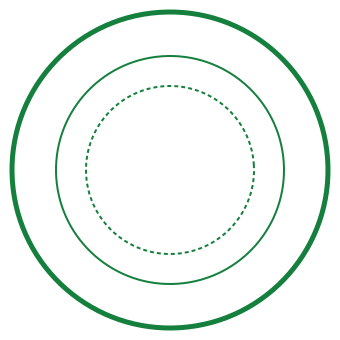

Basic Broadcast Technology: A CTE Pathway Course
Unit 6: Basic Editing Concepts — Editing Pacing: The Rhythm of News

Daily Bellringer Writing Prompt
Loading prompt...
Unit 6: Basic Editing Concepts
Slide 1 of 12Lesson Resource & Reference Hub
Access official course references below.